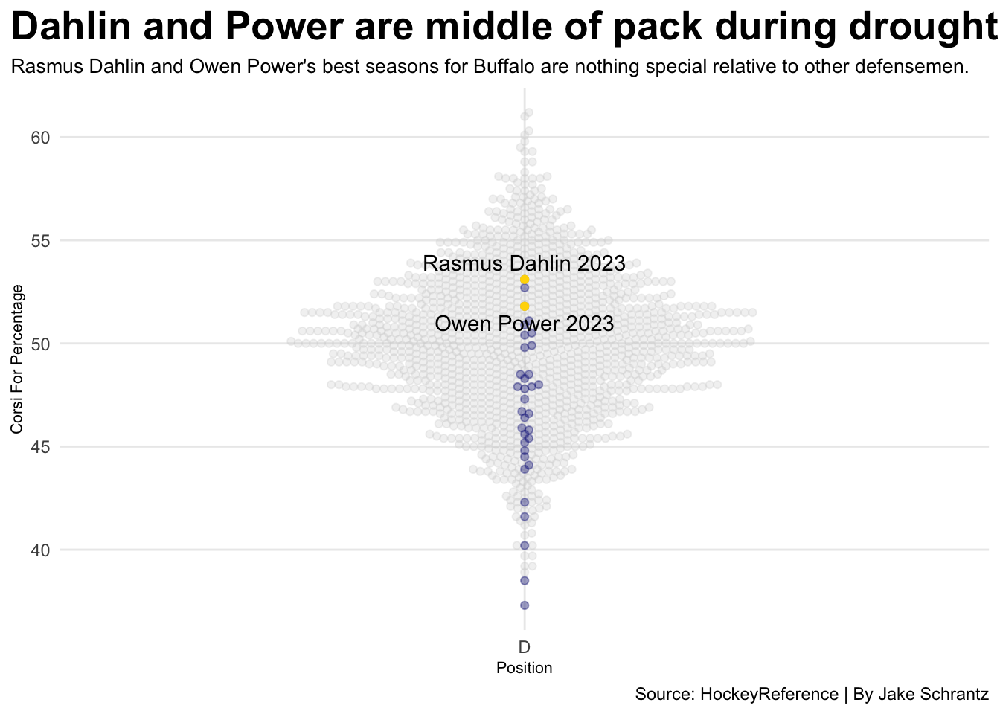
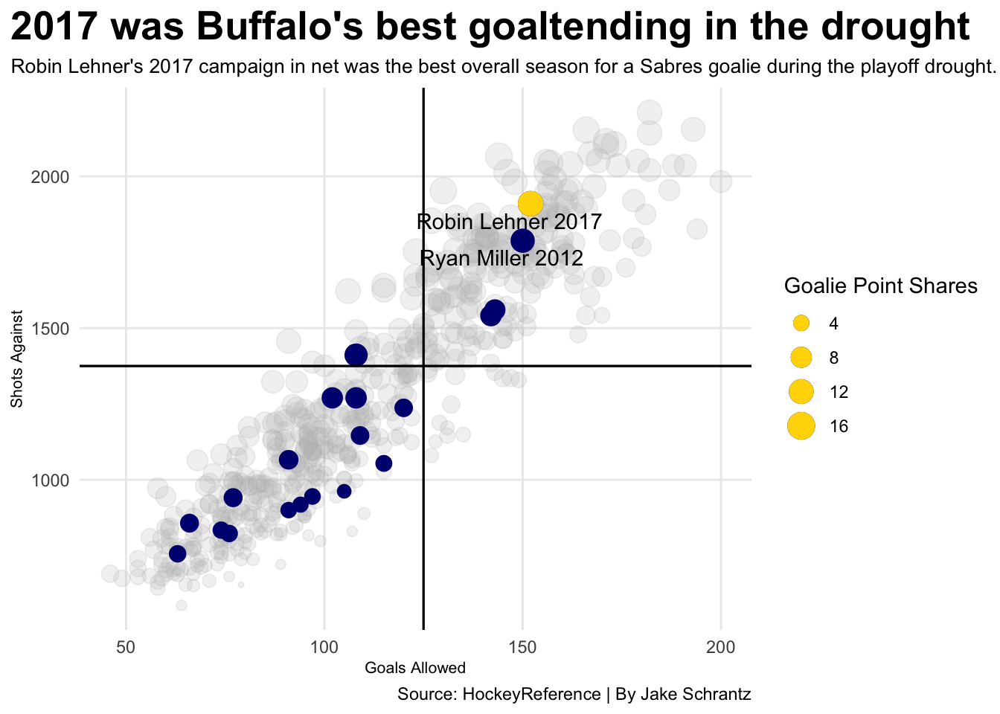

The Buffalo Sabres All-Playoff Drought Team is mostly made up of middle of the road seasons
hockey
data
sports
Author
Jacob Schrantz
Published
November 10, 2023
The Buffalo Sabres of the National Hockey League have the longest active playoff drought in the NHL, currently sitting at 12 consecutive seasons without reaching the postseason. However, the Sabres have had some individual player success stories during this time span. While these success stories were fun for fans to watch, none of them led to the true end goal hockey fans in western New York have desired for over a decade. With so many disappointments in this playoff drought for Buffalo, it begs the question…which of these players deserve a spot on the All-Playoff Drought Team for the Buffalo Sabres?
Two spots that need to be determined are the defensemen. At full strength, there are two defensemen on the ice in most scenarios. Therefore, the All-Drought Team has two spots that will be filled by the best individual seasons by a Sabres defenseman. There will be no repeats allowed on the All-Drought Team, so only one instance of a player can be accepted. For defensemen, the main stat for determining who deserves a spot is their Corsi For Percentage. This is an advanced stat in hockey that boils down to puck possession. If a player has above a 50 percent CF%, that means that their team had control of the puck more often than not when that specfic player was out on the ice, which is a good thing. This is an important stat for defensemen because they are the last line of defense for their team. If they are letting the puck get by, they aren’t doing their job well enough. Therefore, this stat is crucial to be a successful defenseman. During this on-going playoff drought for Buffalo, it has been a rough go at it defensively.
Code
library(tidyverse)library(ggbeeswarm)library(ggrepel)library(ggalt)nhl2012 <-read_csv("hockey1112.csv") |>mutate(Season =2012)nhl2013 <-read_csv("hockey1213.csv") |>mutate(Season =2013)nhl2014 <-read_csv("hockey1314.csv") |>mutate(Season =2014)nhl2015 <-read_csv("hockey1415.csv") |>mutate(Season =2015)nhl2016 <-read_csv("hockey1516.csv") |>mutate(Season =2016)nhl2017 <-read_csv("hockey1617.csv") |>mutate(Season =2017)nhl2018 <-read_csv("hockey1718.csv") |>mutate(Season =2018)nhl2019 <-read_csv("hockey1819.csv") |>mutate(Season =2019)nhl2020 <-read_csv("hockey1920.csv") |>mutate(Season =2020)nhl2021 <-read_csv("hockey2021.csv") |>mutate(Season =2021)nhl2022 <-read_csv("hockey2122.csv") |>mutate(Season =2022)nhl2023 <-read_csv("hockey2223.csv") |>mutate(Season =2023)defensemandata <-bind_rows(nhl2012, nhl2013, nhl2014, nhl2015, nhl2016, nhl2017, nhl2018, nhl2019, nhl2020, nhl2021, nhl2022, nhl2023) |>mutate(playerseason =paste(Player, Season) )set.seed(1234)activeplayers <- defensemandata |>filter( GP >60& CF >0& Pos =="D" )buff <- activeplayers |>filter(Tm =="BUF")topdahlin <- buff |>filter( playerseason =="Rasmus Dahlin 2023" )toppower <- buff |>filter( playerseason =="Owen Power 2023" )topdef <-bind_rows(topdahlin, toppower)ggplot() +geom_beeswarm(data=activeplayers, aes(x=Pos, y=`CF%`), color="lightgrey", alpha=.3)+geom_beeswarm(data=buff, aes(x=Pos, y=`CF%`), color="navy", alpha = .35) +geom_beeswarm(data=topdef, aes(x=Pos, y=`CF%`), color="gold") +geom_text_repel(data=topdef, aes(x=Pos, y=`CF%`, label=playerseason)) +labs(title ="Dahlin and Power are middle of pack during drought",subtitle ="Rasmus Dahlin and Owen Power's best seasons for Buffalo are nothing special relative to other defensemen.",caption ="Source: HockeyReference | By Jake Schrantz",x="Position",y="Corsi For Percentage" ) +theme_minimal() +theme(plot.title =element_text(size =20, face ="bold"),axis.title =element_text(size =8), plot.subtitle =element_text(size=10), panel.grid.minor =element_blank(),plot.title.position ="plot" )

As seen above, the Sabres’ best seasons by a defenseman in this stat category was actually last year by Rasmus Dahlin. Therefore, he is the first member of the Sabres All-Playoff Drought Team. The next best defenseman not named Rasmus Dahlin to have a good CF% was also from last year’s season. Owen Power’s rookie year was a solid one, and he becomes the second defenseman on the Sabres All-Playoff Drought Team.
The criteria to be eligible for this position was that all the defensemen above had to have played in at least 60 games in a season, and have a CF% that could be placed on the chart. Dahlin and Power’s individual seasons are among the top for Sabres defenders in over 10 years, and with both being under the age of 25-years-old, there may be some hope for the Sabres defense in the future.
The next positions that need to be filled are the three forwards on the All-Playoff Drought Team. Buffalo has had a few forwards that had individual success over the years of this struggling franchise. However, unlike the defensemen above, most of Buffalo’s best seasons offensively were years ago. Below is a look at how Buffalo’s offensive options stack up with the rest of the league, and it’s not great. Even some of the best seasons by a Sabres winger are still middle of the pack during this time period.
The forwards below were deemed eligible for the available spots on the All-Drought Team if they played over 19 minutes per game in their individual seasons. Each point on the chart represents a player’s season output for On Ice Goals Percentage, which is another advanced stat in hockey. This stat is a way to look at how an individual player affects scoring. It takes their team’s goals scored while they are on the ice, and divides that by the sum of their goals scored and goals against their team while they were on the ice. An easier way to think about it is that a player is having a better offensive season if their On Ice Goals Percentage is higher than another player’s. For the Sabres though, even the best individual seasons aren’t great offensively.
Jack Eichel is the first forward accepted on the All-Playoff Drought Team, as his best season in 2018 was just under a 60 percent On Ice Goals Percentage. That means that the Sabres were scoring more goals than their opponents were when Eichel was on the ice in 2018. The All-Drought Team can only accept one instance of a player and one player per position, so Eichel gets the Center spot. For the wingers, it’s Sam Reinhart from 2020 on the right, and Evander Kane from 2015 on the left. As seen on the chart, Kane and Reinhart’s seasons don’t reach the level of Eichel’s, which makes it a bit more clear where the struggles for the Sabres may have been coming from during this playoff drought.
Lastly, the All-Playoff Drought Team needs a goaltender. This is a very important distinction, as there is only one goalie spot to go around. The goaltenders were deemed eligible if they played at least 25 games in a season, and were determined by a few important goalie stats. Goals allowed, shots against and goalie point shares were the main three factors that went into the determination of who deserved the spot. In hockey, good goaltenders allow few goals while also stopping a lot of shots against them. The goalie point share is an estimated number of points that a player adds to the team due to their play in the net during the season. If the goalie has a high GPS, then they added a lot to their team that year. In the chart, the higher the GPS, the larger the point gets in size. When it comes to the Sabres, one instance stands out above the rest during these rough 12 seasons.
Code
activegoalies <- goaliesdata |>mutate(goalieseason =paste(Player, Season)) |>filter( GP >25 )buffgoalies <- activegoalies |>filter( Tm =="BUF" )toplehner <- buffgoalies |>filter( goalieseason =="Robin Lehner 2017" )topmiller <- buffgoalies |>filter( goalieseason =="Ryan Miller 2012" )top <-bind_rows(toplehner, topmiller)ggplot() +geom_point(data=activegoalies, aes(x=GA, y=SA, size=GPS), color="grey", alpha=.2) +geom_point(data=buffgoalies, aes(x=GA, y=SA, size=GPS), color="navy") +geom_vline(xintercept =125) +geom_hline(yintercept =1375) +geom_text_repel(data=top, aes(x=GA, y=SA, label=goalieseason)) +geom_point(data=toplehner, aes(x=GA, y=SA, size=GPS), color="gold") +geom_vline(xintercept =125) +geom_hline(yintercept =1375) +guides(size=guide_legend(title="Goalie Point Shares")) +labs(title ="2017 was Buffalo's best goaltending in the drought",subtitle ="Robin Lehner's 2017 campaign in net was the best overall season for a Sabres goalie during the playoff drought.",caption ="Source: HockeyReference | By Jake Schrantz",x ="Goals Allowed",y ="Shots Against" ) +theme_minimal() +theme(plot.title =element_text(size =20, face ="bold"),axis.title =element_text(size =8), plot.subtitle =element_text(size=10), panel.grid.minor =element_blank(),plot.title.position ="plot" )

Robin Lehner’s 2017 season ranks out as the best of the best for the Sabres when these three categories are considered. That season earned his position as the goaltender on the Sabres All-Playoff Drought Team. He had the highest goalie point share of any of the eligible Sabres goaltenders during this time, and even beat out the best season of recently crowned NHL Hall of Famer, Ryan Miller from 2012. Lehner’s name has gone somewhat quiet in Buffalo, but after looking back at it, the Sabres goaltending in 2017 was very strong with Lehner in net.
So that settles it. The Buffalo Sabres All-Playoff Drought Team is this: Rasmus Dahlin (2023) and Owen Power (2023) at defensemen, Eichel (2018), Reinhart (2020), and Kane (2015) as the three forwards, and Robin Lehner (2017) in net. While this has been no doubt a rough patch in the long history of the Buffalo Sabres franchise, there are still high points to look back on fondly by Sabres fans. Also, things may be looking up, as some of the best seasons during this drought have happened as recently as last year. It’s still up in the air whether this drought is fated to last longer than these 12 seasons, but one thing is for sure…Buffalo loves the Sabres, and the fans aren’t going anywhere anytime soon.